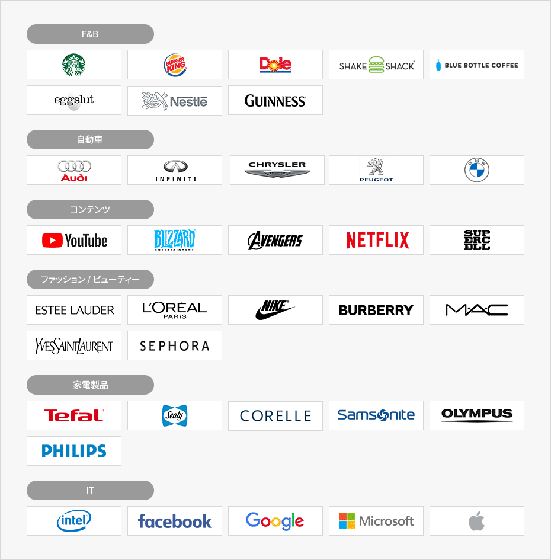

内需市場
- Home
- Why KOREA
- 市場
- 内需市場
強い消費力の内需市場
韓国の国土面積は世界107位に過ぎないが、世界14位の内需市場を有している。
韓国人の消費水準は比較的高く、1人当たりの映画観覧回数、App Store支出などの経済指標で世界上位を記録した。
なお、一人当たりの鉄鋼消費量1位という事実は韓国製造業の発展力量を証明している。

※ 出所 : 世界鉄鋼協会 (2020), 欧州委員会JRC（Joint Research Centre）, 映画振興委員会 (2020), App Annie (2018), Statista Consumer Market Outlook (2020), Kneoma.com (2020, 2Q)
グローバル市場の関門、テストマーケット・コリア
韓国は 製造業の競争力と最高水準のITインフラを基に、先端機器の需要が全世代にまたがっている。
なお、新製品を好み、グローバルな流行に敏感な消費層が厚く形成されているため、「韓国で売れてこそ、世界でも売れる」という言葉があるほど、テストマーケットとして確固とした位置を占めている。


F&B
- starbucks
- shakeshack
- Dole
- Chupa Chups
- bluebottle
- eggslut
- Nestle
- GUINNESS
- Audi
- INFINITI
- CHRYSLER
- PEUGEOT
- BMW
- YouTube
- BLIZZARD
- AVENGERS
- NETFLIX
- SUPERCELL
- ESTEE LAUDER
- LOREAL PARIS
- NIKE
- BURBERRY
- MAC
- YVESSAINTLAURENT
- SEPHORA
- Tefal
- Sealy
- CORELLE
- Samsonite
- OLYMPUS
- PHILIPS
- intel
- Microsoft

※ 出所 : 大韓商工会議所, Invest KOREA